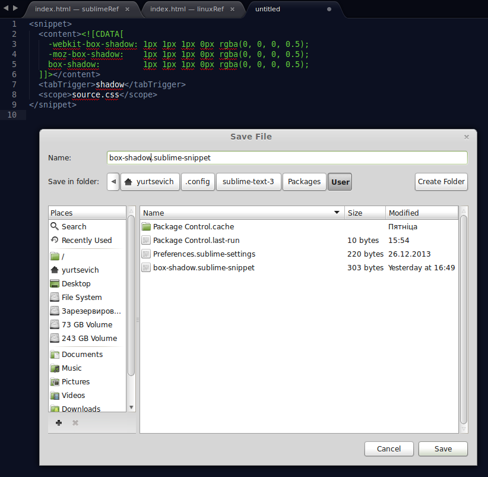
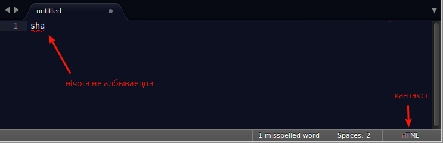

SublimeText
Карысныя спасылкі
Хатняя старонка рэдактара: sublimetext.com
Дакумэнтацыя, якая ствараецца на грамадзкай аснове: docs.sublimetext.info
Камбінацыі клявіш
Акно рэдактара
F11 – на поўны экран і назад.
Shift + F11 – рэдагаваньне без адцягненьня ўвагі, на экране застаецца толькі асноўнае акно рэдактара, усё астатняе (бакавая панэль, мэню і інш.) хаваецца. Тая ж самая камбінацыя для выхаду з гэтага рэжыму.
Ctrl + k + b – паказаць/схаваць бакавую панэль.
Ctrl + ` – паказаць/схаваць кансоль.
Ctrl + n – адкрыць новую ўкладку.
Ctrl + Shift + n – адкрыць новае акно.
Alt + <клявіша зь лічбай> – зрабіць актыўнай укладку з пазначаным парадкавым нумарам у межах актыўнай панэлі.
Ctrl + w – закрыць укладку.
Ctrl + Shift + <клявіша зь лічбай> – перамясьціць укладку на панэль з пазначаным парадкавым нумарам.
Ctrl + <клявіша зь лічбай> – зрабіць актыўнай панэль з пазначаным парадкавым нумарам.
Alt + Shift + 1 – адзіная панэль з укладкамі.
Alt + Shift + 2 – дзьве калёнкі панэляў укладак.
Alt + Shift + 3 – тры калёнкі панэляў укладак.
Alt + Shift + 4 – чатыры калёнкі панэляў укладак.
Alt + Shift + 5 – матрыца 2х2 панэляў укладак.
Alt + Shift + 8 – два радкі панэляў укладак.
Alt + Shift + 9 – тры радкі панэляў укладак.
Перамяшчэньне
Ctrl + p – пераход да файла па крытэру (напрыклад, па яго імені). Ужываецца разумны пошук.
Ctrl + p потым @ – пераход да файла па крытэру і потым пераход да сымбаля (функцыі, ID).
Ctrl + p потым # – пераход да файла па крытэру і потым пошук унутры файла.
Ctrl + p потым : – пераход да файла па крытэру і потым пераход да пэўнага радку.
Ctrl + r – пераход да сымбаля (функцыі, ID) унутры актыўнага файла.
Ctrl + g – пераход да пэўнага радку актыўнага файла.
Ctrl + Alt + p – пераход да іншага праекту.
Закладкі
Маюцца на ўвазе не ўкладкі са зьмесьцівам файлаў, але адзнакі ў пэўным файле.
Ctrl + F2 – стварыць закладку
F2 – перайсьці да наступнай закладцы
Shift + F2 – перайсьці да папярэдняй закладцы
Ctrl + Shift + F2 – выдаліць усе закладкі
Выдзяленьне
Ctrl + click – multi-edit, будзе з кожным клікам ствараць новы курсор у месцы кліку.
Ctrl + d – выдзяляе слова, у якім зьмяшчаецца курсор. Наступная актывацыя гэтай камбінацыі клявішаў прывядзе да таго, што да выдзяленьня будзе дадавацца наступнае такое ж слова.
Пошук і замена
Ctrl + f – пошук зададзенага фрагмэнту тэксту ў актыўным файле, у якасьці крытэру можна задаваць рэгулярныя выразы.
Ctrl + f потым Alt + Enter – пошук зададзенага фрагмэнту тэксту ў актыўным файле, і потым выдзяленьне ўсіх вынікаў пошуку.
F3 – пераход да наступнага выніку пошуку.
Shift + F3 – пераход да папярэдняга выніку пошуку.
Ctrl + h – пошук і замена ў актыўным файле.
Ctrl + Shift + f – пошук ня толькі ў актыўным файле, але скрозь усе альбо некаторыя файлы праекту.
Каманды
Ctrl + Shift + p – адкрыць палітру камандаў.
Сьніпэты
Сьніпэты (snippets) прызначаны для таго, каб аб'ядноўваць фрагмэнты коду альбо проста тэксту, звычайна доўгія альбо складаныя для набору, каб можна было іх хутка устаўляць.
Стварэньне новага
Каб стварыць новы сьніпэт трэба абраць у мэню Tools > New Snippet:

У выніку будзе адкрыта новая укладка з наступным шаблёнам сьніпэту:
Зьмест сьніпэта трэба зьмясьціць заміж <![CDATA[ і ]]> у элемэнце <content>, напрыклад:
Затым можна задаць трыгер і кантэкст, па якім будзе ўстаўляцца сьніпэт:
Гэтыя дадатковыя парамэтры кажуць, што сьніпэт павінен быць даступны толькі ў кантэксьце CSS-коду і прапаноўвацца для ўстаўцы пры ўводзе слова shadow. Цяпер захоўваем сьніпэт, зьвярніце ўвагу на абавязковае пашырэньне файла-сьніпэта .sublime-snippet:

Устаўка
Цяпер, калі ў рэдактары пачаць уводзіць слова shadow, SublimeText прапануе магчымасьці для завяршэньня. Мы можам альбо абраць адпаведны пункт са сьпісу опцыяў, альбо завяршыць увод слова-трыгера (shadow) і націснуць клявішу Tab. У гэтых абодвух выпадках у рэдактар замест слова-трыгера будзе ўстаўлена цела сніпэта.

Прапаноўвацца ўстаўка сніпэта будзе толькі ў CSS-кантэксьце, у іншых нічога не адбудзецца:

Могуць быць сытуацыі, калі цела сьніпэта будзе мець не статычны, але зьменны характар, то бок акрамя статычнага зьместу ў целе сьніпэта будуць адна ці некалькі зьменных частак. Такія часткі пазначаюцца ў сьніпэце праз фігурныя дужкі з пазначэньнем яе парадкавага нумару:
У гэтым выпадку пасьля ўстаўцы сьніпэта зьменныя яго часткі пад нумарам 1 (іх можа быць некалькі) будуць адначасова выдзеленыя:

Можна зьмяніць іх зьмест і націснуўшы клявішу Tab перайсьці да наступнай зьменнай частцы:

Дадаткі
У SublimeText існуе стос усялякіх дадаткаў. Пры жаданьні скарыстацца імі пажадана першым усталяваць мэнэджэр пакетаў Package Control, які ў сваю чаргу сам зьяўляецца дадаткам да SublimeText.
Як карыстацца: націснуць камбінацыю клявіш Ctrl + Shift + p, набраць каманду install і націснуць Enter. Можа спатрэбіцца троху пачакаць пакуль мэнэджэр пакетаў загрузіць сьпіс усіх даступных дадаткаў. Адкрыецца сьпіс дадаткаў, цяпер можна альбо гартаючы сьпіс шукаць патрэбны, альбо ўводзіць нейкія ключавыя словы для фільтрацыі.
IntelliJ IDEA
Камбінацыі клявіш
Double Shift – паўсюдны пошук.
Ctrl + Shift + N – адкрыць файл.
Ctrl + N – адкрыць клясу.
Ctrl + E – адкрыць нядаўнія файлы.
Shift + Esc – зачыніць актыўную бакавую панэль.
Alt + 1 – адкрыць бакавую панэль «Projects».
Alt + 2 – адкрыць бакавую панэль «Favorites».
Alt + 3 – адкрыць бакавую панэль «Find».
Alt + 6 – адкрыць бакавую панэль «TODO».
Alt + 7 – адкрыць бакавую панэль «Structure».
Alt + 9 – адкрыць бакавую панэль «Version Control».